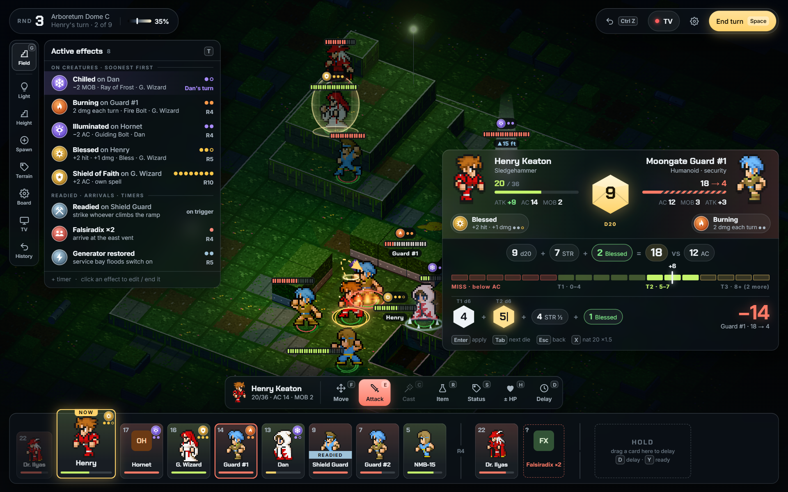
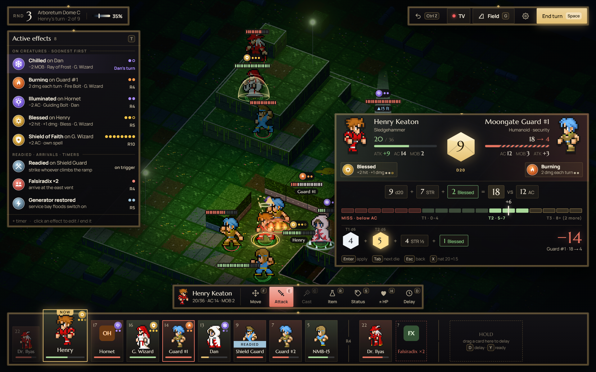
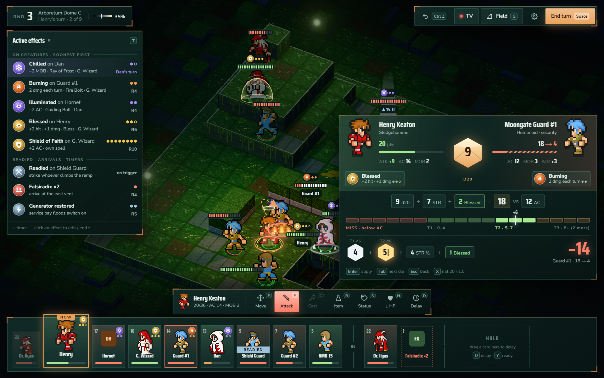
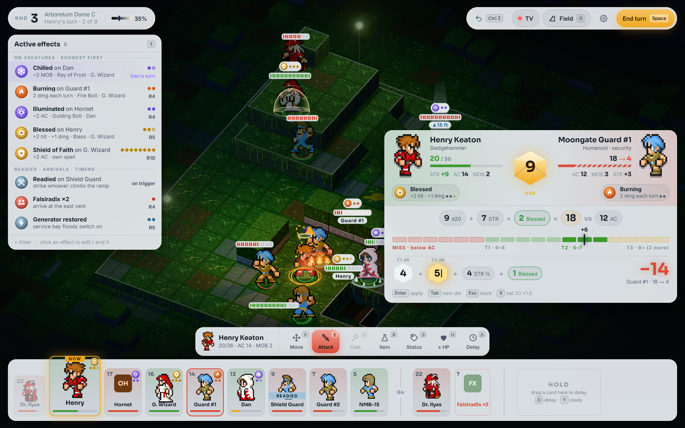

Round 2 · four looks on the same Spotlight layout
Identical layout and content: only the visual style changes. Roll-panel plates, mid-attack.

1 · Glassbaseline from round 1: frosted dark glass, Chakra Petch + Inter

2 · Obsidian & Giltmatte black, thin gold inlay with diamond studs, Marcellus serif + Manrope: fantasy, premium

3 · Verdigrisweathered teal/copper with copper corner brackets, Saira Condensed + Nunito Sans: worn facility meets arboretum

4 · Moonstonepale frosted ceramic panels, dark ink, Sora + Inter: maximum contrast against the dark board